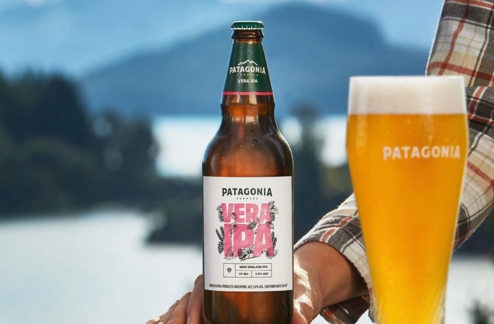

PROBÁ VERA IPA
Te invitamos a probar nuestra nueva variedad Vera Ipa, compuesta con malta Pale ale, Múnich, Trigo malteado, caramber y avena. De un color dorado profundo, espuma blanca persistente y opalescencia característica. Su aroma es frutal, herbal, cítrico. Balanceado hacia el lúpulo proveniente de la malta. Sabor muy suave lupulado en hervor que le da un amargor bajo, con intenso de sabor cítrico y a frutas tropicales, gracias al agregado de lúpulos aromáticos en Dry Hopping. De cuerpo medio y muy refrescante. Te recomendamos consumirla entre los 5° y -7°.